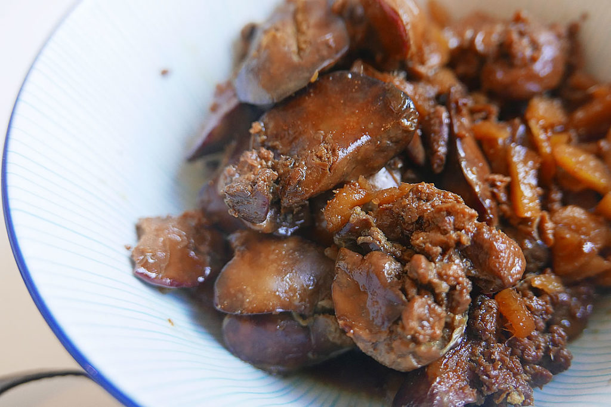

Liver

Description
This recipe is the Japanese version of liver with ginger.
Ingredients
- chicken liver
- ginger
- soy sauce
- mirin
- sugarr
- olive oil
Steps
- In a pot on medium heat, add olive oil
- Add cut up ginger and let sizzle in oil, so oil soaks up flavor
- Add soy sauce and mirin
- Add sugar until it dissolves
- Add liver and stir in mix for a few minutes
- Cover pot and let liver cook